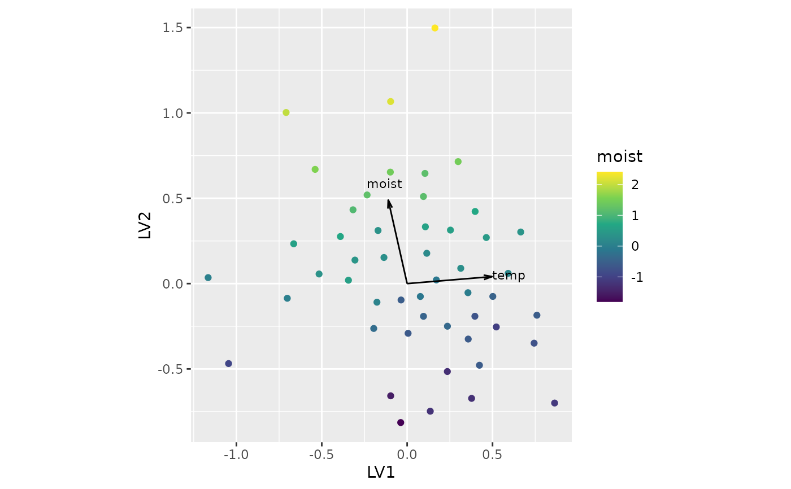

Extracts the main components of the fitted latent space of an rrGDM
object as a list of matrices (see also biplot.rrGDM).
Arguments
- object
A fitted model of class
rrGDM.- rotate
Logical indicating whether to apply varimax rotation (via
varimax) before returning the results. Default isTRUE. The rotation is estimated from the conditional coordinates (L).
Value
A list of matrices, with latent dimensions (LV1, LV2,
...) as columns:
lambda: environmental loadings (predictors x latent dimensions).u_sample: sample-level errors (samples x latent dimensions).u_re: additional random effects, e.g.(1 | group)(groups x latent dimensions). Omitted if the model has none.L: conditional coordinates of the samples (samples x latent dimensions).L_m: marginal coordinates of the samples (samples x latent dimensions).rotation: the rotation matrix applied (the identity matrix ifrotate = FALSE), useful to rotate other quantities consistently.
Details
Latent positions of the samples are built as
L_m = X %*% lambda (marginal: determined by the predictors only) and
L = L_m + u_sample (+ Z %*% u_re) (conditional: also including
sample-level errors and any other random effects). Rotating all matrices
with the same rotation matrix preserves these relationships and all
pairwise distances between samples.
Examples
set.seed(1)
# Simulate data
n <- 50 # sites
p <- 25 # species
env <- data.frame(temp = rnorm(n), moist = rnorm(n))
eta <- as.matrix(env) %*% matrix(rnorm(2 * p), 2, p)
Y <- matrix(rpois(n * p, exp(1 + 0.8 * eta)), n, p,
dimnames = list(paste0("site", 1:n), paste0("sp", 1:p)))
fit <- rrGDM(Y, env, k = 2, formula = ~ temp + moist,
family = "binomial")
#> ℹ Preparing data
#> ✔ Preparing data ... done
#>
#> ℹ Finding initial parameters (dbRDA)
#> ✔ Finding initial parameters (dbRDA) ... done
#>
#> ℹ optimisation
#> ℹ Start 1/1: objective = 6152.6868
#> ℹ optimisation
#> ✔ optimisation ... done
#>
if (requireNamespace("ggplot2", quietly = TRUE)) {
# basic biplot
biplot(fit)
# add species correlations with latent variables
biplot(fit, type = "marginal", species_cor = TRUE)
# colour by predictor
biplot(fit, col_by = "moist") + ggplot2::scale_colour_viridis_c()
}
#> ℹ Labelling only the 20 species with the strongest correlation (25 available).
#> • Increase `species_cor_n`, or set it to `NULL`, to label more.
